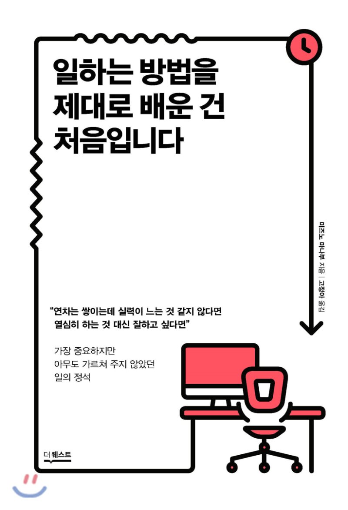
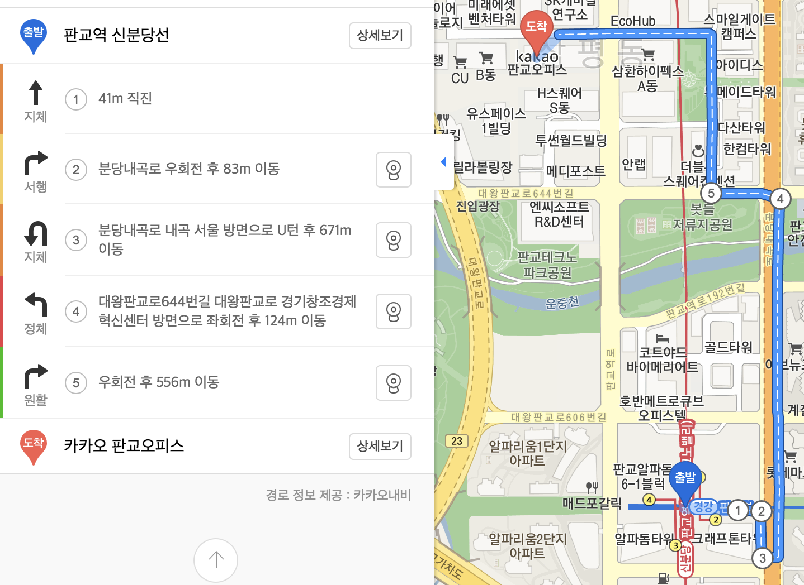
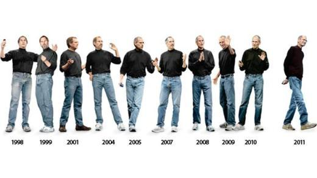
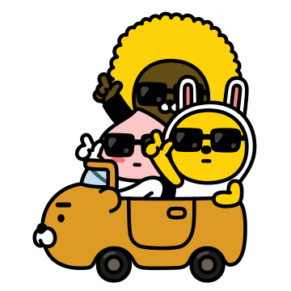

스트레스를 덜 받고
빠르게 일처리 하기
일하는 방법을 제대로 배운 건 처음입니다.

이런 생각이 드신적 있나요?
- 열심히 한다고 하는 데 왜 일에 속도가 안나지?
- 왜 결정을 하지 못하고 고민하는 시간이 많이 들까?
- 완벽하게 처리했다고 생각했는데 챙기지 못한 부분들이 왜 생길까?
- 팀으로 일하는 건 왜 이렇게 힘들까?
올해 5월 재택근무중
일을 잘하려면 어떻게 해야 될까 고민 시작
과거에 생산성을 높이기 위한 고민
- 코딩을 잘하는 방법에 대한 고민
- 하지만 코딩을 잘하는 방법은 한계가 있음
업무는 코딩뿐이 아님
- 프로젝트의 협업
- 리뷰어로 등록된 프로젝트 PR
- 회의(팀, 파트, 그룹 주간회의 등)
공유할 주제 5개!
- 목적지부터 정하자
- 목적지까지 가는 지도 그리기
- 최단 거리를 찾아 달려가자
- 더 중요한 일에 집중할 수 있도록 머릿속을 비우자
- 팀으로 움직일 때 비로소 완벽해진다
왜
업무를 처리하는 과정
-
목적지를 정하고
-
목적지까지 가는 지도 그리고
-
목적지까지 걷는 과정
어떻게
- 목적지를 머릿속으로 생각
- 머릿속에 있던 목적지를 시각화하고
- 정말 이게 맞을 지 고민해서 정밀도를 높혀감
목적지가 떠오르지 않는다면?
- 비슷한 사례를 찾아 목적지를 정하는 것도 방법
-
송년회 준비
- 작년 송년회 준비와 정산 문서 참고
- 프로그램 / 물품 / 정산금액
2. 목적지까지 가는 지도 그리기

목적지까지 가는 지도 그리기 = 업무의 절차
왜
업무의 질이 향상됨
- 기본적인 일은 의식 X
- 한층 더 높은 곳을 지향할 수 있음
- 여유가 생김으로 진정 필요한 곳에 에너지 사용
-
선택지가 줄어 스트레스가 줄어듬

어떻게
- 해당 업무를 하는 과정을 떠올려 보고 먼저 절차를 만듬
- 그리고 해당 업무를 절차에 따라 실행
- 절차에 부족하거나 불필요한 절차가 있다면 추가/제거
절차를 만드는 데 익숙하지 않다면?
업무에 익숙해져야 되는 시기
절차도 경험을 통해 만들어짐
때문에 적응할 시기가 필요
익숙해지면 절차도 원활히 보임
정밀도를 높힐 수 있음
왜
우리는 짧은 시간에 이루어지는 과정이라면 절차를 잘 지킴
예) 비빔면 만들기
- 포장을 뜯고
- 건더기 스프를 넣고
- 뜨거운 물을 붙고
- 3분간 기다렸다가 물을 빼고
- 찬물로 헹구고
- 액상스프를 넣어 섞음
불과 몇 분의 과정이지만 제대로 완수
업무도 짧은 과정이면 완수하기 쉬움
어떻게
- 2주 이상의 업무라면 1주 단위로 스프린트를 만든다.
- 정식 마감전에 사전 마감을 만든다.
-
업무의 단위를 최대한 작게 쪼갠다.
4. 더 중요한 일에 집중할 수 있도록 머릿속을 비우자
5. 팀으로 움질일 때
비로소 완벽해진다
